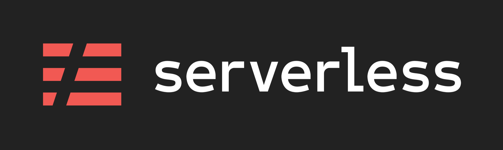
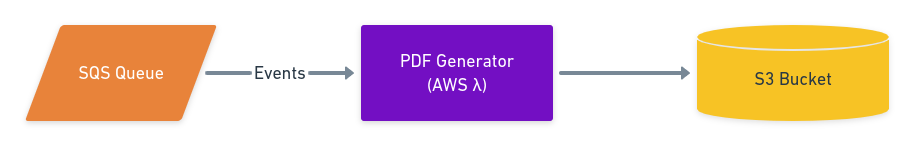
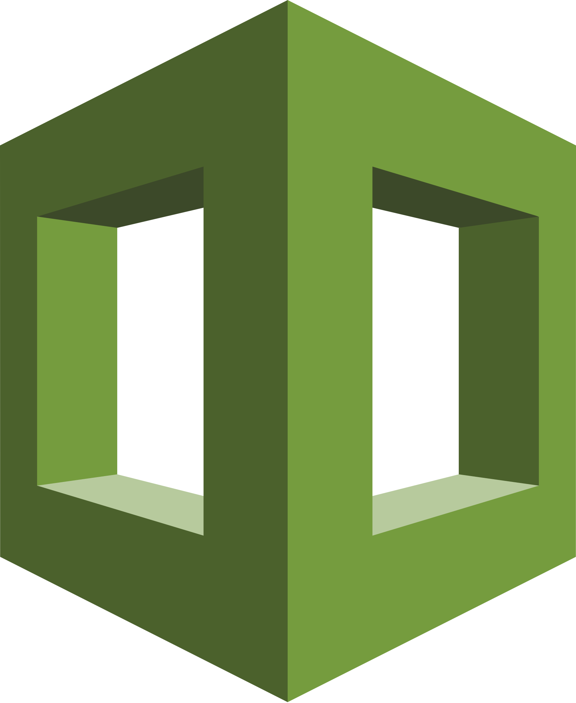

Generally, the AWS infrastructure in the company I work at is managed by Terraform, which I am quite happy with. But, recently I yielded to the temptation to try out Serverless framework. This article describes a few thoughts derived from the experience.
TL;DR: I do not believe I will use Serverless framework for any further projects.

The Problem: PDF generator
We need an AWS Lambda function that will be triggered by messages delivered via an SQS queue.
For each message, the function will:
-
run headless Chrome browser,
-
fetch certain web page,
-
generate a PDF from it,
and put it on an S3 bucket. That's all.

Why Serverless?
I figured out the best tool for the job was Puppeteer, which required Node.js. I am not a Node developer, therefore I turned to the Web for examples. The Web benevolently granted me with one: Serverless Chrome Puppeteer built (what a surprise!) on Serverless.
Implementing the configuration
Using Serverless, we will:
-
Create an SQS queue we will be listening for requests,
-
create the Lambda function itself,
-
and create an S3 bucket to write result files to.
Let's start from the last point.
Create an S3 bucket, take 1
You may already know that Serverless is configured via single YAML file — serverless.yml.
One possible way to create an S3 bucket and grant your serverless function access to it looks like this:
functions:
resize:
handler: exporter.handler
events:
- s3: photos
This will immediately:
-
create an S3 bucket named
photos, -
and grant access to Lambda using an inline IAM access policy.
This is very concise, but does not fit our use case. We do not need to trigger function by S3 events. We will have to use a completely different method.
Create an S3 bucket, take 2
The previous example was based on functions section, but what we actually need is resources section, like in an example here. Here is what I could come up with:
resources:
Resources:
UploadBucket:
Type: AWS::S3::Bucket
Properties:
BucketName: "my-app-pdf-exports"
AccessControl: Private
VersioningConfiguration:
Status: Enabled
The syntax of resources section is an injection of AWS CloudFormation syntax, and is therefore prescribed by AWS, not by Serverless. In particular, S3 bucket creation is described at AWS::S3::Bucket page at AWS CloudFormation documentation — just scroll to the YAML heading.

Launched back in 2011, AWS CloudFormation is an Infrastructure As Code solution from, and specific to, Amazon Web Services.
Serverless Framework is a wrapper on top of AWS CloudFormation and operates by creating and manipulating CloudFormation stacks.
Takeout 1. In certain situations designed by the authors of the framework (or its plugins), the resource descriptions required to get up and running are quite concise and minimalistic. That is arguably why Serverless was created, I would say.
However, when particular situation is not directly supported, the user is forced to resort to native CloudFormation syntax, which is a bit more verbose.
This means instead of one language (AWS CF or Serverless) the user has to work with both.
Grant access for Lambda to S3 bucket
I implemented that in the provider section of the configuration file.
provider:
name: aws
runtime: nodejs12.x
...
iamRoleStatements:
- Effect: "Allow"
Action:
- "s3:PutObject"
Resource:
- Fn::GetAtt: # Root
- UploadBucket
- Arn
- Fn::Join: # Subdirectories
- ''
- - Fn::GetAtt:
- UploadBucket
- Arn
- "/*"
What is done here?
-
An inline IAM policy is created and attached to every Lambda in the project;
-
The policy allows to upload files onto the bucket and all of its (virtual) subdirectories.
Another way to rewrite this
In Terraform the declaration would be like this:
data "aws_iam_policy_document" "my-app-lambda-to-bucket-access" {
statement {
actions = [
"s3:PutObject",
]
resources = [
aws_s3_bucket.upload_bucket.arn, # Root
"${aws_s3_bucket.upload_bucket.arn}/*", # Subdirectories
]
}
}
Comparing these two snippets, I must say that I genuinely like YAML markup language and use it in many places, but — in my humble opinion — in CloudFormation it was mercilessly abused. YAML was not meant to be a programming language, it was conceived to store configuration.
How easy is this to parse the Fn::Join function call visually and understand this function accepts two arguments — a delimiter and a list of values to join using that delimiter?
Compared to the trivial Terraform counterpart, this causes unnecessary headache and eye bleeding.
Takeout 2. Human-readability of CloudFormation (and, therefore, Serverless) syntax is noticeably limited by its YAML form.
Call Lambda on SQS events
This usecase is handled by Serverless natively, and here is how:
functions:
compute:
handler: handler.compute
events:
- sqs: arn:aws:sqs:region:XXXXXX:MyFirstQueue
...
The argument for sqs is the queue ARN. As the page says,
Serverless won't create a new queue for you.
Meaning, we will need to revert to CloudFormation once again.
Create an SQS queue and listen to it
Like this:
resources:
Resources:
...
TriggerQueue:
Type: AWS::SQS::Queue
Properties:
QueueName: my-app-pdf-trigger
VisibilityTimeout: 3600
functions:
exporter:
handler: dist/exporter.handler
memorySize: 2560
timeout: 300
events:
...
- sqs:
arn:
Fn::GetAtt:
- TriggerQueue
- Arn
Here, we split the work.
-
In CF, we manually create the queue,
-
and Serverless adds the IAM machinery and the event trigger for us behind the scenes.
Like someone said at this forum topic:
Yeah, but if i wanted to write CloudFormation… then i would just write CloudFormation. Serverless is great because it saves you having to write CloudFormation.
Seems that not exactly.
Pass bucket name to the Lambda function
The usual way to do that is via environment variables of the Lambda function. Like this:
functions:
exporter:
handler: dist/exporter.handler
memorySize: 2560
timeout: 300
...
environment:
BUCKET_NAME: ${self:resources.Resources.UploadBucket.Properties.BucketName}
This string interpolation syntax, which looks much more familiar that Fn::GetAtt, is a blessing of Serverless itself, not a CloudFormation feature. Fn::GetAtt will not even work here, because CloudFormation does not consider BucketName to be one of exportable attributes of an S3 bucket.
Export SQS queue URL to Terraform
The other systems in our company's infrastructure rely upon Terraform, and I'd like to make the SQS queue available to those systems. They will write into it.

Serverless authors suggest to use AWS Systems Manager (SSM) Parameter Store for that goal.
By the way, — author of the article suggests to create a shared MySQL database used by multiple services, which I would advise strongly against.
But the idea to use SSM is sound. Creating an SSM value:
resources:
Resources:
...
TriggerQueueURL:
Type: AWS::SSM::Parameter
Properties:
Name: online-reporting-pdf-incoming-queue
Type: String
Value:
Ref: TriggerQueue
The Ref function to return URL of the SQS queue is the third method to get attribute of a resource we've met in this short tutorial. ☺
Takeout 3. In Serverless, there are at least three (those which I know about) methods to fetch attribute value of a resource:
String interpolation
Fn::GetAtt
Fn::RefKnowing where to use what requires diving into AWS CF and Serverless documentation. I did not research any IDE tools which would help here.
Terraform side will look like this:
data aws_ssm_parameter pdf-exporter-requests-queue {
name = "online-reporting-pdf-incoming-queue"
}
resource aws_lambda_function pdf-export-trigger {
...
environment {
variables = {
...
REQUESTS_QUEUE = data.aws_ssm_parameter.pdf-exporter-requests-queue.value
}
}
}
Easy peasy.
Conclusion
The service was deployed and works. However, what are the typical tasks Serverless Framework is good for?
Pros
-
Serverless supports deploy to multiple environments for dev, staging, and production. — We currently handle them with a few
makefiles, but there are tools like Terragrunt for that, which I am planning to try out. -
Serverless builds deployment packages for your language. — We handle that by
makeas well, and that's not much code. -
Serverless features local development. — Development with FastAPI is easy: just a CLI command and you have your service running.
-
Serverless creates dashboards for your Lambda functions. — But, these are very similar to native Cloudwatch dashboards, from what I can see. The only missing is Cold Starts chart, which I do not currently know how to replicate, but I'll get to that in a while.
-
Numerous plugins are available. — Terraform provides modules which do essentially the same but are very easy to create. We are using modules routinely to reduce boilerplate and to simplify our resource description files.
Cons
Function-centric world view
Serverless imposes a very function-centric view of your application.
Lambda functions are the gods around which all other resources (API Gateways, S3 buckets, SNS topics) are orbiting.
This is not exactly how I would view the systems I am working on. To my opinion, serverless functions are but a gear of a complex system which may also feature instances, containers, databases, VPCs, — many of which may play a more important role than a particular Lambda function.
CloudFormation and YAML
Terraform was released in 2014, and its authors were able to learn on the experience of the predecessors. That's probably why Terraform HCL syntax is much more human and machine readable, and enjoys rich support from IDEs.
Incompleteness
Serverless can be used with Terraform:
-
Terraform manages common pieces of infrastructure which are used by different functions,
-
Functions and the infrastructure directly connected to them is managed by Serverless.
But, I must confess I fail to see the point. Supporting two competing IaC systems seems redundant, especially if we remember that Terraform can do both of these tasks equally well.
Summary
As a result of all this, I do not see the place of Serverless in my projects in foreseeable future.